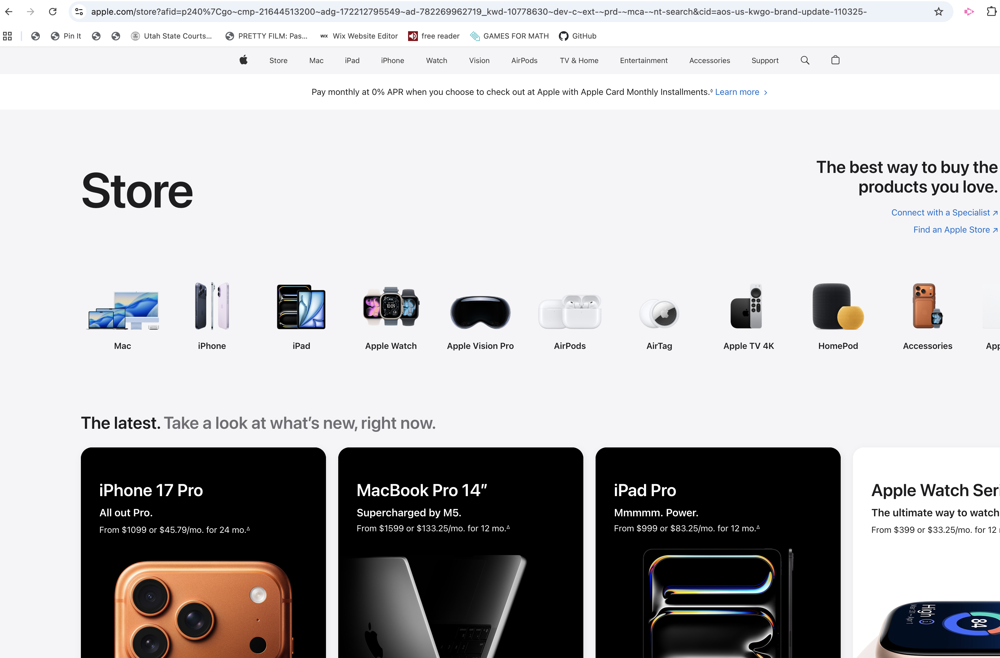
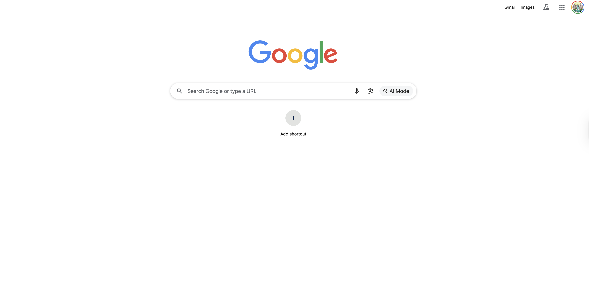
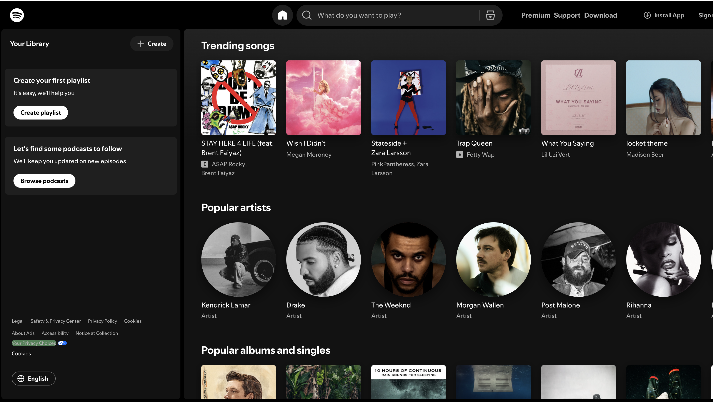

Visual Hierarchy
Apple
https://www.apple.com
Apple’s homepage demonstrates strong visual hierarchy because it guides the user’s attention in a clear order. The largest text (headline) appears first, followed by supporting text, and then the main call-to-action links. The spacing, bold typography, and layout grouping make it obvious what is most important and what actions the user should take next, which improves usability and makes the page easy to scan.
White Space and Clean Design

Google’s homepage is a strong example of white space and clean design because it uses minimal elements and a lot of empty space to reduce distractions. The search bar is centered and surrounded by whitespace, which helps the user focus on the main purpose of the page. This simplicity makes the design feel organized, easy to understand, and visually calm.
PARC: Contrast
Spotify
https://www.spotify.com
Spotify is a great example of contrast because it uses dark backgrounds with bright text and colorful album artwork to create clear visual separation. The strong difference between light and dark makes important elements easier to read and helps key sections stand out. Spotify also uses contrast in size and style to emphasize headings, navigation, and interactive elements.